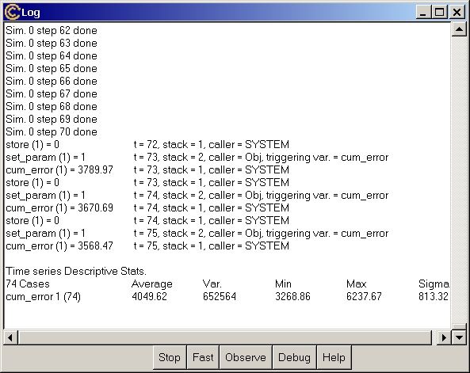

This window is a note pad where the system writes down messages (that users can edit, copy and paste somewhere else). Moreover, during a simulation run the Log window is active, allowing users to control the simulation flow.

Simulation
Control Buttons
While a simulation is running, users can press one of the buttons in
the lowest bar of the window to modify the simulation flow.
Stop
Quit the simulation. Simulation data for the result analysis
are saved up to the last step fully computed. In case users decided to
run multiple simulation exercises the remaining simulation runs are not
executed.
Fast
Increase the speed of simulation preventing the system from writing
messages. In fact, for simple models (with few Variables) spend most of
simulation time just writing down the step number computed.
To further increase the simulation speed, minimize (but not destroy!)
the Run Time Plot window, if exists.
Observe
Return the system to print the messages on the status of the simulation
in case Fast has been previously used.
Debug
Change the simulation in Debug Mode. This means that when a Variable
set to be debugged finishes its equation the system interrupts the
simulation and start the Debugger, allowing a
through check of the status of the model. The button has no effect if no
Variable is checked to be debugged.